دليل سياحي لمدينة الإسكندرية
اكتشف أهم المعالم التاريخية والطبيعية بطريقة جذابة
اكتشف أهم المعالم التاريخية والطبيعية بطريقة جذابة
موجودة في حي الأنفوشي قريب من الميناء الشرقي بالإسكندرية.
بترجع للعصر اليوناني الروماني.
محفورة تحت الأرض في الصخر.
بتجمع بين الفن المصري واليوناني.
من أهم آثار الإسكندرية القديمة.
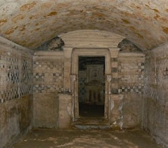
موجود في وسط الإسكندرية بشارع فؤاد.
بيضم آثار من العصر اليوناني والروماني في مصر.
اتأسس سنة 1892 ويعتبر من أقدم متاحف الإسكندرية.
فيه تماثيل، عملات، توابيت، ومشغولات حجرية.
بيبين امتزاج الحضارة المصرية مع اليونانية والرومانية.
اضغط هنا لعرض موقع المكان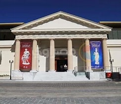
موجودة في وسط الإسكندرية قريبة من محطة مصر.
من أقدم حدائق الإسكندرية واتعملت في القرن الـ19.
بتتميز بمستويات مرتفعة ونزول كأنه شلالات.
فيها بقايا أسوار الإسكندرية القديمة.
مكان هادي للتنزه وبيجمع بين الطبيعة والتاريخ.
اضغط هنا لعرض موقع المكانموجودة داخل حدائق قصر المنتزه في الإسكندرية.
جزيرة صغيرة صناعية وسط بحيرة.
بتتميز بالمناظر الطبيعية والهدوء.
مكان مشهور للجلوس وشرب الشاي والتصوير.
من الأماكن المفضلة للفسحة العائلية والرومانسية.
اضغط هنا لعرض موقع المكان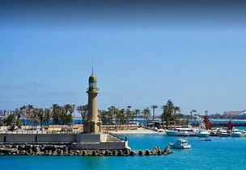
موجود في حي محرم بك بالإسكندرية.
اتأسس سنة 1955.
بيضم أعمال فن تشكيلي مصري وأجنبي.
فيه لوحات، تماثيل، وفنون حديثة.
من أهم الأماكن الثقافية لمحبي الفن في الإسكندرية.
اضغط هنا لعرض موقع المكانموجود في منطقة كوم الدكة بالإسكندرية.
بيرجع للعصر الروماني (القرن الرابع الميلادي).
مسرح نصف دائري من الرخام.
كان بيُستخدم للعروض والاجتماعات.
من أهم المعالم الأثرية الرومانية في المدينة.
اضغط هنا لعرض موقع المكان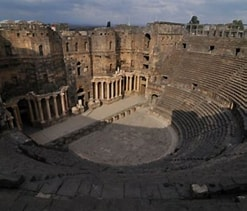
موجود في حي بحري بالإسكندرية على البحر مباشرة.
اتبنى في عهد محمد علي باشا.
من أقدم القصور الملكية في مصر.
كان مقر إقامة ملوك مصر قديمًا.
شهد أحداث تاريخية مهمة، منها تنازل الملك فاروق عن العرش.
اضغط هنا لعرض موقع المكان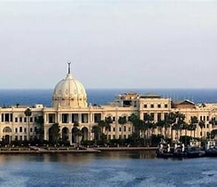
منطقة ساحلية شرق الإسكندرية.
مشهورة بخليج أبو قير.
فيها آثار تاريخية مهمة.
معروفة بصيد السمك والمأكولات البحرية.
مكان هادي وبيجمع بين البحر والتاريخ.
اضغط هنا لعرض موقع المكان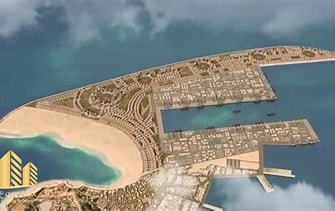
واحدة من أهم المراكز الثقافية في العالم.
اتافتحت سنة 2002 إحياءً لمكتبة الإسكندرية القديمة.
بتضم مكتبات، متاحف، قاعات عرض ومؤتمرات.
معلم ثقافي وسياحي عالمي.
اضغط هنا لعرض موقع المكان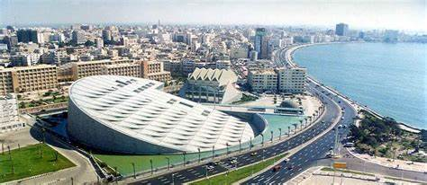
قلعة تاريخية على البحر المتوسط.
بناها السلطان قايتباي في القرن الـ15.
مقامة في موقع فنار الإسكندرية القديم.
من أشهر معالم المدينة.
اضغط هنا لعرض موقع المكان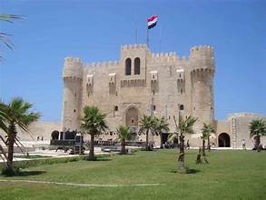
أطول عمود أثري في مصر.
بيرجع للعصر الروماني.
اتعمل تكريمًا للإمبراطور دقلديانوس.
من أشهر آثار الإسكندرية.
اضغط هنا لعرض موقع المكان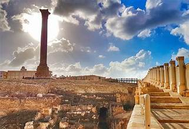
أكبر مقابر رومانية في مصر.
بتجمع بين الفن المصري واليوناني والروماني.
اكتُشفت في أوائل القرن الـ20.
من أهم المواقع الأثرية.
اضغط هنا لعرض موقع المكان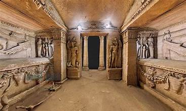
بيضم مجوهرات أسرة محمد علي.
موجود في قصر الأميرة فاطمة الزهراء.
يعكس فخامة العصر الملكي.
من أهم المتاحف الفنية.
اضغط هنا لعرض موقع المكان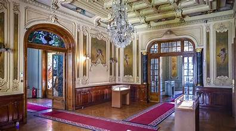
بيحكي تاريخ الإسكندرية عبر العصور.
بيضم آثار فرعونية ويونانية ورومانية.
موجود في قصر إيطالي الطراز.
اضغط هنا لعرض موقع المكان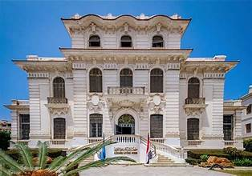
أشهر كوبري على كورنيش الإسكندرية.
اتصمم بطراز إسلامي حديث.
مكان مفضل للتصوير.
اضغط هنا لعرض موقع المكانأشهر مسجد في الإسكندرية.
بيرجع للعصر الإسلامي.
بيتميز بالعمارة الأندلسية.
اضغط هنا لعرض موقع المكان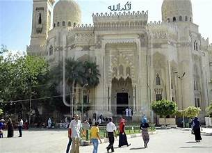
من أقدم وأجمل حدائق الإسكندرية.
بتتميز بالطابع الأوروبي.
مكان هادي للتنزه.
اضغط هنا لعرض موقع المكان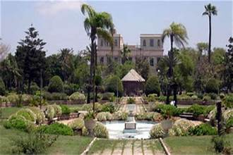
من أقدم متاحف الأحياء المائية في الشرق الأوسط.
بيضم كائنات بحرية نادرة.
مكان تعليمي وترفيهي.
اضغط هنا لعرض موقع المكان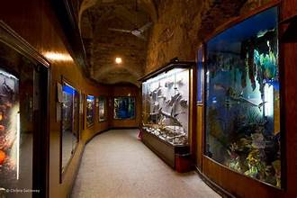